Appeared in Discrete & Computational Geometry. 33(3): 507 - 534, March 2005.
(also presented at 43rd IEEE Symposium on Foundations of Computer Science (FOCS
2002))
Download journal version (final except before copy editing)[gzipped postscript (509 Ko)]
[pdf
(593 Ko)]
Download conference version (© 2002 IEEE) [postscript (300 Ko)]
[pdf (226 Ko)]
Abstract
Every compact orientable boundaryless surface M can be cut along simple loops with a common point $v_0$, pairwise disjoint except at v0, so that the resulting surface is a topological disk; such a set of loops is called a system of loops for M. The resulting disk may be viewed as a polygon in which the sides are pairwise identified on the surface; it is called a polygonal schema. Assuming that M is a combinatorial surface, and that each edge has a given length, we are interested in a shortest (or optimal) system of loops homotopic to a given one, drawn on the vertex-edge graph of M. We prove that each loop of such an optimal system is a shortest loop among all simple loops in its homotopy class. We give an algorithm to build such a system, which has polynomial running time if the lengths of the edges are uniform. As a byproduct, we get an algorithm with the same running time to compute a shortest simple loop homotopic to a given simple loop.
The optimization algorithm is based on an elementary step which replaces each loop in turn by a shorter homotopic loop. The journal and conference versions of the paper slightly differs in the implementation of this elementary step. Specifically, the implementation in the journal version avoids the computation of the (partial) universal covering of a certain cylinder as described in the conference version. The figures below refer to the journal version of the elementary step. The loops are spread apart the edges they should follow in order to distinguish several loops when they walk along a same edge.
| 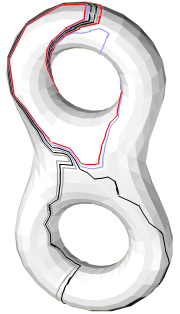 | 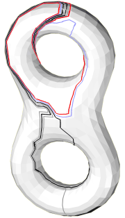 | 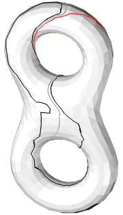 | 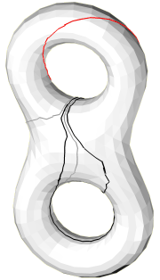 | 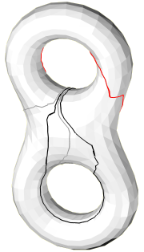 | |
| 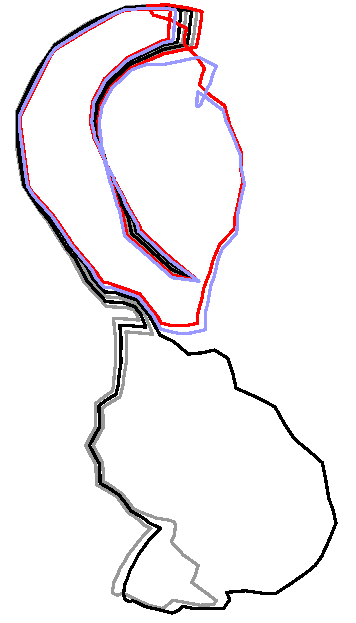 | 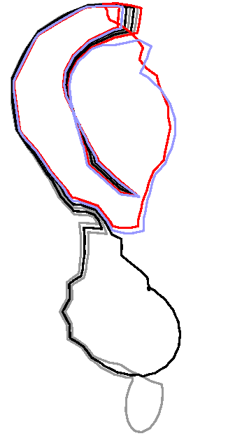 | 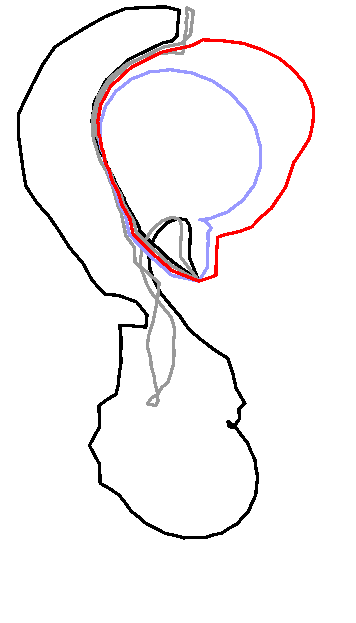 | 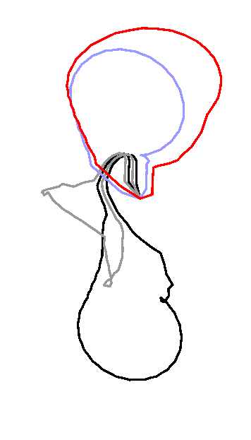 | 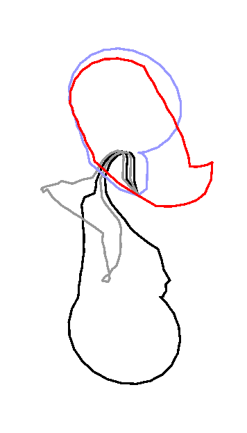 | 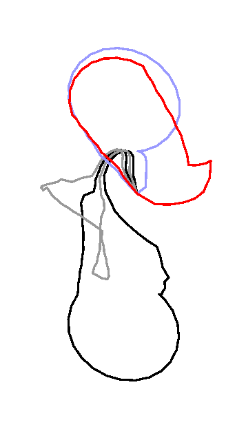 |
| Initial system | after 4 ES | after 1 MS | after 1 MS and 4 ES | after 2 MS | after 3 MS |
| 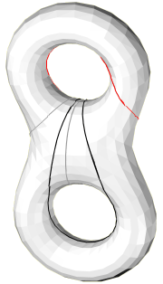 | |
| 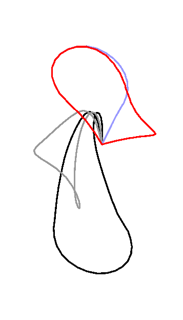 | |
| optimal system computed
on the vertex-edge graph |
geodesic system computed
on the polyhedral surface |